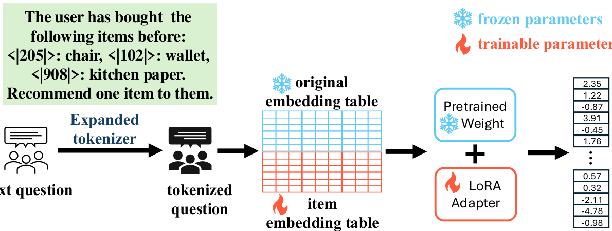

CoVE: Compressed Vocabulary Expansion Makes Better LLM-based Recommender Systems (压缩词表扩展：让 LLM 推荐系统更强)
- 会议/期刊: ACL 2025 Findings
- 作者与机构: Haochen Zhang, Tianyi Zhang, Junze Yin, Oren Gal, Anshumali Shrivastava, Vladimir Braverman (Rice University / University of Haifa / Johns Hopkins University)
- 推荐链路定位: 端到端生成式（序列推荐 Next-Item 预测）
- 研究方向: 大语言模型推荐 / 生成式推荐与离散语义 ID
- 论文原文: https://arxiv.org/abs/2506.19993v1
- 开源代码: https://github.com/HaochenZhang717/CoVE-official-Repo
TL;DR (1分钟核心速览)
现有 LLM 推荐要么只把 LLM 当嵌入提供器（浪费序列理解能力），要么走"微调-生成标题-向量检索"路线（多 token 生成慢、易幻觉）。CoVE 把每个物品注册为词表中的一个唯一 token，微调时联合更新物品嵌入表、LoRA 与 lm_head，推理时只取 lm_head 最后 \(|\mathcal{I}|\) 维 logits 直接排序，彻底绕开文本生成；再用哈希把物品嵌入表压缩至 1/16。在 Amazon 四个数据集上 NG@5/HR@5 相对 SOTA 提升 30%–62%，推理吞吐从 0.066 提升到 6.5 samples/s（约 100×）。
Background & Motivation (背景与核心矛盾)
- 主流范式: 一条路线用 LLM 产出物品/用户嵌入去初始化 SASRec、BERT4Rec 等非 LLM 模型；另一条路线（BIGRec、GPT4Rec）微调 LLM 生成物品标题，再做嵌入检索对齐到真实物品空间。
- 前人局限: 前者只借用嵌入能力，未激活 LLM 的序列建模与下一 token 预测能力；后者要求 LLM 逐 token 生成完整标题，既慢又必然面临幻觉——生成的标题可能根本不在物品库中，检索补救只是事后打补丁。
- 核心洞察 (Key Insight): 推荐本质是"从有限物品集中选一个"，与语言模型的 next-token 分类在形式上完全同构。若把物品空间直接并入词表，推荐就退化为一次单 token 分类，幻觉在结构上被消除。
- 本文切入点: 词表扩展 + 嵌入表联合微调 + 哈希压缩，把"生成式推荐"改造成"单步 logits 判别"，同时解决工业级物品空间（Amazon 2023 版 4819 万物品，嵌入表约 96GB）的内存不可行问题。
Method (核心方法设计)
1. 整体框架 (Overall Architecture)
输入是一条指令化 prompt：Task Instruction + 以 <|item_id|>: "title" 形式排列的用户历史 + Task Output（目标物品 ID）。分词器词表被扩展 \(|\mathcal{I}|\)个特殊 token，每个 token 在嵌入表中拥有独立行向量；这些行向量与 LoRA 适配器、lm_head 一同参与微调，主干 Transformer 权重冻结。训练目标即标准下一 token 预测，但监督信号只落在物品 ID token 上。推理时只前向一次，取 lm_head 输出向量的最后\(|\mathcal{I}|\) 维作为全库打分，做 Full-Ranking 排序，无需自回归解码。
flowchart TD
A["用户历史序列 + 指令<br/>物品以 <|id|>: title 排列"] --> B["扩展词表分词器<br/>物品 ID 成为独立 token"]
B --> C["哈希压缩物品嵌入表<br/>k 路哈希取均值"]
C --> D["冻结 LLM 主干 + LoRA<br/>联合微调嵌入表与 lm_head"]
D --> E["取 logits 末 |I| 维<br/>全库排序输出 Top-K"]
2. 关键设计拆解 (Key Designs)
-
物品 ID 词表化（Item-as-Token）：痛点是把推荐对齐到"生成标题"需要多 token 且易幻觉。CoVE 为每个物品 \(i\)在词表中分配唯一 token，使推荐目标变为单 token 分类，损失退化为标准交叉熵\(\mathcal{L}=-\log p(y_t=\text{ID}(i^\ast)\mid \text{context})\)。物理直觉：LLM 的 next-token 头本身就是对词表做 softmax 分类，物品集天然是"一个受限词表"，无需任何结构改造即可复用其全部序列建模能力。
-
哈希嵌入压缩（Hashing-based Compression）：痛点是大物品空间下嵌入表显存爆炸。设共享隐空间 \(\mathcal{S}\)（\(|\mathcal{S}|\ll|\mathcal{I}|\)），采样\(k\)个通用哈希函数\(h_1,\dots,h_k\)，物品嵌入取各哈希槽嵌入的均值： $\(\boldsymbol{e}_i=\frac{1}{k}\sum_{j=1}^{k}\boldsymbol{e}_{h_j(i)},\quad h(i)=((ai+b)\boldsymbol{o}d p)\boldsymbol{o}d|\mathcal{S}|\)$ 其中 \(p\)为大素数，\(a,b\) 随机取值。仅用加法、乘法、取模即可在 GPU 上高效计算。直觉上多路哈希相当于对物品做"随机特征共享"，让低频物品借用同槽高频物品的梯度信号，兼具压缩与隐式正则效果。
-
训练目标、负采样与推理效率：总损失为物品 ID token 的下一 token 交叉熵，无需任何负采样——softmax 分母覆盖全物品空间，等价于全库对比学习。推理侧一次前向即可得到全库打分，吞吐 6.5 samples/s，对比 BIGRec 的 0.066 samples/s 约 100× 加速；代价是 lm_head 与嵌入表规模随 \(|\mathcal{I}|\) 线性增长，由哈希压缩抵消。
Experimental Setup & Evaluation Protocol (实验设置与评估协议)
- 数据集与预处理: 四个 Amazon 公开基准，沿用 TIGER（Beauty/Toys/Sports）与 BIGRec（Video Games）的原始划分以保证可比：
| 数据集 | #Items | #Sequences | 说明 |
|---|---|---|---|
| Video Games | 17,408 | 149,796 | 对比 BIGRec，LLaMA-2-7B + 4-bit QLoRA |
| Beauty | 12,101 | 22,363 | 对比 TIGER，LLaMA-3.2-3B |
| Toys & Games | 11,924 | 19,412 | 同上 |
| Sports & Outdoors | 18,357 | 35,598 | 同上 |
- 数据划分与防穿越 (Splitting Strategy): 沿用 TIGER / BIGRec 的
Leave-One-Out式序列切分（最后一交互为测试目标），未额外引入时间戳重切。 - 排名评测协议 (Ranking Protocol): 采用
Full-Ranking全库排序（logits 末 \(|\mathcal{I}|\)维直接排序），指标为 NG@K 与 HR@K，\(K\in\{5,10\}\)（Video Games 额外报\(K=20\)）。 - 对比基线与超参设置: 基线覆盖 GRU4Rec、BERT4Rec、Caser、SASRec、P5、HGN、S3-Rec、FDSA、TIGER、DROS、GPT4Rec、BIGRec。学习率 \(10^{-4}\)，batch size 32，LoRA rank 8 / alpha 16，训练至多 10 epoch，单卡 A100。
Key Experimental Results (实验关键数据)
1. 主实验对比 (Main Results)
Beauty / Toys / Sports（CoVE 采用 2× 压缩率）：
| 数据集 | 指标 | SASRec | S3-Rec | FDSA | TIGER | CoVE | Improv. |
|---|---|---|---|---|---|---|---|
| Beauty | NG@5 | 0.0249 | 0.0244 | 0.0163 | 0.0321 | 0.0498 | +55.1% |
| Beauty | HR@10 | 0.0605 | 0.0647 | 0.0407 | 0.0648 | 0.1009 | +55.7% |
| Toys | NG@5 | 0.0306 | 0.0294 | 0.0140 | 0.0371 | 0.0509 | +37.2% |
| Toys | HR@10 | 0.0675 | 0.0700 | 0.0381 | 0.0712 | 0.0986 | +38.5% |
| Sports | NG@5 | 0.0192 | 0.0204 | 0.0156 | 0.0181 | 0.0296 | +45.1% |
| Sports | HR@10 | 0.0350 | 0.0385 | 0.0288 | 0.0400 | 0.0624 | +56.0% |
Video Games（对比 BIGRec 的微调-检索范式）：
| 模型 | NG@5 | NG@10 | NG@20 | HR@5 | HR@10 | HR@20 |
|---|---|---|---|---|---|---|
| SASRec | 0.0015 | 0.0024 | 0.0035 | 0.0021 | 0.0037 | 0.0057 |
| GPT4Rec-LLaMA | 0.0000 | 0.0001 | 0.0001 | 0.0000 | 0.0002 | 0.0002 |
| BIGRec | 0.0189 | 0.0216 | 0.0248 | 0.0243 | 0.0329 | 0.0457 |
| CoVE | 0.0221 | 0.0268 | 0.0341 | 0.0290 | 0.0437 | 0.0621 |
2. 消融实验 (Ablation Study)
| 设置 | Beauty NG@5 | Beauty HR@10 | Toys NG@5 | Sports HR@10 |
|---|---|---|---|---|
| 仅冻结嵌入表 + 含标题 prompt (I.) | 0.0057 | 0.0178 | 0.0058 | 0.0128 |
| 仅可训练嵌入表 + 去标题 prompt (E.) | 0.0450 | 0.0836 | 0.0429 | 0.0439 |
| 完整 CoVE（可训练嵌入 + 含标题） | 0.0498 | 0.1009 | 0.0509 | 0.0624 |
3. 关键实验发现 (Key Findings)
- 嵌入表可训练性是命门，标题文本是增益项：冻结物品嵌入表后 Beauty NG@5 从 0.0498 崩至 0.0057（跌幅近 9 倍），说明随机初始化的新 token 嵌入必须靠推荐信号重塑；而去掉标题仅降至 0.0450，证明 LLM 的序列理解能力可部分补偿语义缺失，但 ID-title 映射仍是高质量推荐的关键（案例研究中模型能稳定复现 ID 与标题的对应关系）。
- 压缩率与性能呈温和单调退化，16× 仍可超越 SOTA：Beauty 在 8× 压缩时 NG@5/HR@5 归一化值降至约 0.75，是四个数据集中最敏感的；Sports 与 Toys 在 8× 内几乎无损，16× 下除 Toys 的 HR@10 外全部指标仍优于最强基线，说明哈希共享对稀疏物品起到了隐式正则作用。
- 相对 BIGRec 的优势随 \(K\) 增大而扩大：Video Games 上 NG@5 提升 16.9%，而 NG@20 提升 37.5%、HR@20 提升 35.9%，表明 logits 全库打分在长尾候选上比"生成-检索"两阶段更不易漏召，这与消除幻觉的机制预期一致。
Highlights & Limitations (亮点、对比与审稿批判)
- 与代表作对比 (vs. Prior Work): 与 TIGER 相比，CoVE 不做 RQ-VAE 语义 ID 的层次化生成，而是直接让物品占据原生词表槽位，省去码本设计与多级解码；与 BIGRec 相比，训练阶段同样微调 LLM，但推理阶段从"生成标题 + 向量检索"变为"单次前向取 logits"，同时消除幻觉与百倍延迟；与纯嵌入初始化路线（LLM 嵌入 + SASRec）相比，CoVE 让 LLM 主干真正参与序列建模。
- 可迁移亮点: (1) "把候选集并入词表 + 只取末段 logits"这一技巧可平移到任何以 LLM 为骨干的召回/重排场景，天然支持全库 softmax 而无需负采样；(2) 多路哈希均值嵌入是一种极轻量的参数共享方案，可直接用于其他超大词表/ID 类特征的显存优化。
- 审稿级局限批判: (1) 哈希压缩仅与"无压缩"和基线对比，未与量化、低秩分解等更强压缩手段横向比较，压缩率选择也缺少自适应策略；(2) 评估仅限 Amazon 四个中等规模数据集（物品数 1–2 万），对论文自身强调的千万级物品场景缺乏实证，且未报告训练显存与总训练时长的定量数据；(3) 依赖物品标题文本，在纯 ID 或无文本元数据的场景下增益会显著收窄。
Rating (四维评分)
- 方法创新性 (Novelty): ⭐⭐⭐⭐ （把推荐重构为单 token 分类的思路简洁且自洽，词表扩展本身非首创，但"扩展 + 哈希压缩 + logits 直排"的组合在 LLM4Rec 中定位清晰）
- 评估协议与实验扎实度 (Protocol & Experiments): ⭐⭐⭐⭐ （四数据集 + Full-Ranking + 12 个基线 + 完整消融与压缩率扫描，但缺少大规模物品空间与训练开销的实证）
- 写作与数学规范度 (Clarity & Rigor): ⭐⭐⭐⭐ （框架图与公式交代清楚，哈希函数定义完整；对压缩带来的性能损失缺乏理论刻画）
- 工业落地与复现价值 (Industrial & Practical Value): ⭐⭐⭐⭐⭐ （代码开源，100× 推理加速与 16× 显存压缩直击线上部署痛点，工程价值突出）